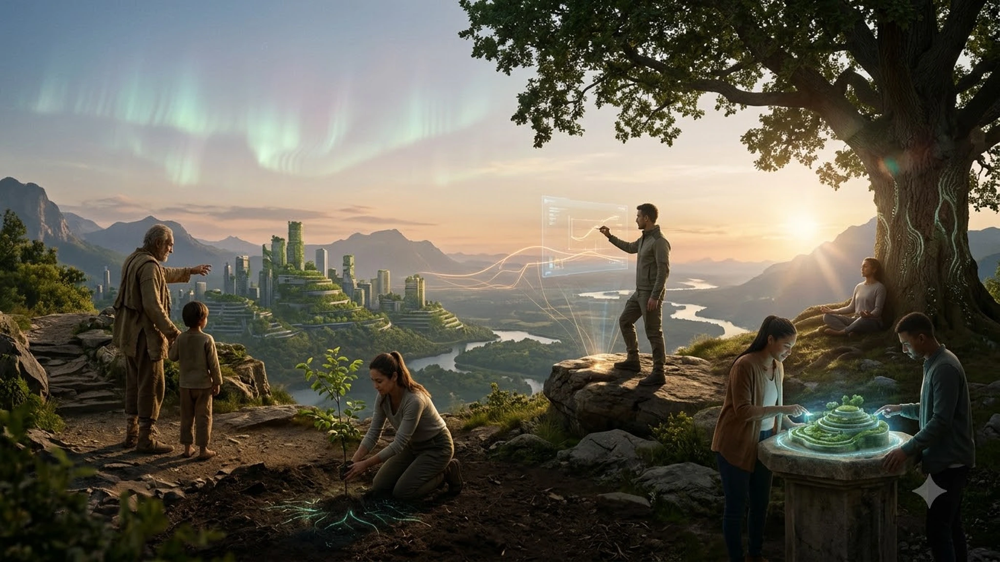

🏛️ KIẾN TẠO CUỘC SỐNG xAI • TRANG 1 / 30
Phím: ← → Space
Kiến Tạo Cuộc Sống xAI: Nền Tảng Giá Trị và Di Sản Vĩnh Cửu
🔄 THẺ BÀI LẬT 3D CHUYỂN HÓA (TRƯỚC → TRỞ THÀNH)
Bấm hoặc rê chuột để lật • Âm thanh 4D
🎙️ KỊCH BẢN LỜI GIẢNG (NÃO TRÁI & NÃO PHẢI)